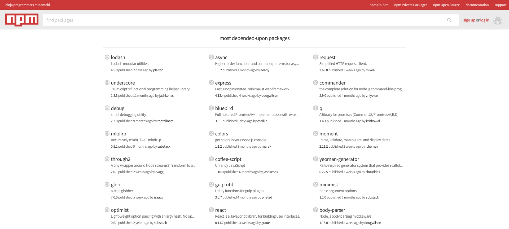

lodash.js API Tour
Kevin Beswick | Bret Davidson
NCSU Libraries
Introductions
- What is your name?
- Where are you from?
- Why are you interested in learning about lodash?
Why JS?
- Lingua franca for frontend development
- Increased focus on client side application development
- Node.js increasingly popular for backend development in JS
Naive
Object.prototype.pick = function(arr) {
var _this = this;
var obj = {};
arr.forEach(function(key){
obj[key] = _this[key];
});
return obj;
};
var objA = {"name": "colin", "car": "suzuki", "age": 17};
var objB = objA.pick(['car', 'age']);
// {"car": "suzuki", "age": 17}
Lodash
var objB = _.pick(objA, ['car', 'age']);
// {"car": "suzuki", "age": 17}

lodash is currently the most depended upon package on NPM
What can lodash.js do?
Intro
function setLocsDisplayStatus () {
var states = _.uniq(_.pluck(scope.locs, 'filter'));
if (_.contains(states, false)) {
scope.display = true;
scope.locsActive = true;
} else {
if (!scope.actsActive) {
scope.display = false;
}
scope.locsActive = false;
}
}
function setLocsDisplayStatus () {
var states = _.uniq(_.pluck(scope.locs, 'filter'));
if (_.contains(states, false)) {
scope.display = true;
scope.locsActive = true;
} else {
if (!scope.actsActive) {
scope.display = false;
}
scope.locsActive = false;
}
}
function setLocsDisplayStatus () {
var states = _.uniq(_.pluck(scope.locs, 'filter'));
if (_.contains(states, false)) {
scope.display = true;
scope.locsActive = true;
} else {
if (!scope.actsActive) {
scope.display = false;
}
scope.locsActive = false;
}
}
chldrnCnts = _.map(chldrn, function (o) {
return calcCount(o, coll, prop);
});
chldrnCnts = _.map(chldrn, function (o) {
return calcCount(o, coll, prop);
});
Loop for N Times
// 1. Basic for loop.
for(var i = 0; i < 5; i++) {
// ....
}
// 2. Using Array's join and split methods
Array.apply(null, Array(5)).forEach(function(){
// ...
});
// Lodash
_.times(5, function(){
// ...
});
Loop and return deeply nested property
// Fetch the name of the first pet from each owner
var ownerArr = [{
"owner": "Colin",
"pets": [{"name":"dog1"}, {"name": "dog2"}]
}, {
"owner": "John",
"pets": [{"name":"dog3"}, {"name": "dog4"}]
}];
// Array's map method.
ownerArr.map(function(owner){
return owner.pets[0].name;
});
// Lodash
_.map(ownerArr, 'pets[0].name');
Clone objects
var objA = {
"name": "colin"
}
// Lodash
var objB = _.cloneDeep(objA);
objB === objA // true